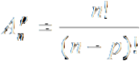

La même stratégie utilisée par les voleurs pour ouvrir des coffres-forts il y a 500 ans est la même que celle utilisée pour le crime numérique ! Des attaques appelées "attaques par force brute" sont utilisées, dans lesquelles vous prenez et essayez chaque combinaison jusqu'à ce que la bonne soit trouvée.
En cryptographie, la combinatoire est souvent utilisée pour estimer la sécurité des chiffrements et des codes d'accès. Cela se fait en comptant les combinaisons possibles du mot de passe, afin de voir combien de tentatives seraient nécessaires pour le deviner.
Par exemple, la serrure à combinaison classique basée sur un chiffrement rotatif, en supposant que les chiffres dans le chiffrement ne peuvent pas se répéter:
Par exemple, la serrure à combinaison classique basée sur un chiffrement rotatif:

Le nombre de mots de passe possibles ici serait l'arrangement:
Où n est le nombre de chiffres possibles et k est la longueur du cadenas.
Le programme suivant vous permet de voir les nombres possibles de combinaisons sur le cadenas:
!
!
À l'ère moderne, cependant, ce type de chiffrement est facile à trouver en devinant, donc nous ajoutons tous les caractères du clavier pour augmenter considérablement le nombre de mots de passe possibles:
Par exemple, la serrure à combinaison classique basée sur un chiffrement rotatif:
!
(Le programme suppose que seuls les caractères du clavier américain sont possibles, mais il prend en compte si vous ajoutez d'autres caractères spéciaux)
Dans ce cas, nous pouvons répéter les caractères et le nombre se simplifie en arrangements répétés, ou le nombre de caractères possibles élevé à la puissance de la longueur du mot de passe. Comme vous pouvez le constater, le nombre devient astronomiquement grand avec seulement quelques caractères.